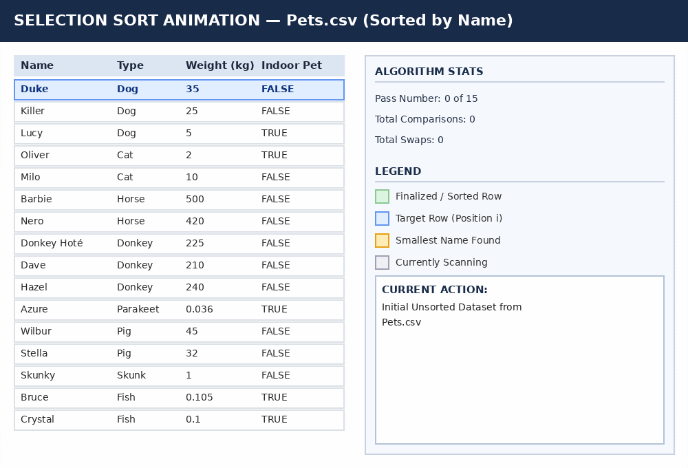
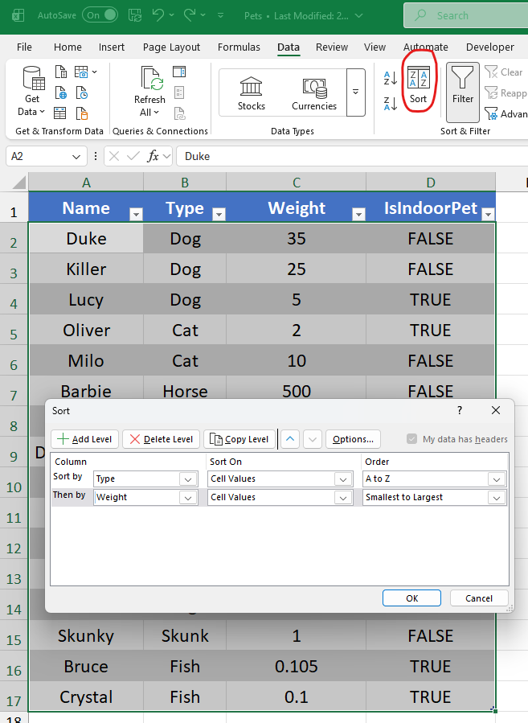

Sorting Data with SQL ORDER BY#
Introduction: What is Sorting?#
In previous chapters, you learned how to retrieve specific columns using SELECT, filter rows using WHERE, and compute calculated fields using transformations and functions.
Often, query output is returned in a random order. To analyze financial trends, rank operational performance, or prepare professional audit schedules, you must be able to arrange your records logically.
In data analytics, sorting means to rearrange items in a specified order based on the values in one or more columns.
Before writing a single line of SQL code, we must establish a fundamental principle of structured data: Sorting rearranges entire rows. A database table consists of structured records (rows) made up of individual fields (columns). When you sort a table by a specific field, that field acts as a key. The database engine moves every row as an intact unit. You are not simply sorting a single column of numbers or text; you are reordering the entire observation across all of its attributes. Thus, the data in every row is preserved during the sorting process. For example, if a row contains a customer ID and a customer name, sorting will preserve the ID associated with each customer.
A Toy Dataset: Pets#
To see how sorting works visually, consider a simple dataset describing sixteen pets on a farm. Each row represents a single pet (an observation) with four attributes: Name, Type (species), Weight (in kilograms), and IsIndoorPet (a boolean value indicating whether the pet lives indoors):
Name |
Type |
Weight |
IsIndoorPet |
|---|---|---|---|
Duke |
Dog |
35 |
FALSE |
Killer |
Dog |
25 |
FALSE |
Lucy |
Dog |
5 |
TRUE |
Oliver |
Cat |
2 |
TRUE |
Milo |
Cat |
10 |
FALSE |
Barbie |
Horse |
500 |
FALSE |
Nero |
Horse |
420 |
FALSE |
Donkey Hoté |
Donkey |
225 |
FALSE |
Dave |
Donkey |
210 |
FALSE |
Hazel |
Donkey |
240 |
FALSE |
Azure |
Parakeet |
0.036 |
TRUE |
Wilbur |
Pig |
45 |
FALSE |
Stella |
Pig |
32 |
FALSE |
Skunky |
Skunk |
1 |
FALSE |
Bruce |
Fish |
0.105 |
TRUE |
Crystal |
Fish |
0.1 |
TRUE |
Notice what happens if we sort this table alphabetically by Name:


Fig. 9 Selection Sort Animation — Rearranging Rows by Name#
As the sorting algorithm scans the dataset, it identifies the row containing "Azure" and moves that entire record—including her species (Parakeet), her weight (0.036 kg), and her indoor status (TRUE)—to the top position. Azure’s weight is never separated from her name. Preserving row integrity is what distinguishes relational sorting from disconnected array manipulation.
Single-Level Sorting: Ascending vs. Descending Order#
In SQL, sorting is accomplished using the ORDER BY clause. The basic syntax of a query with an ORDER BY clause is:
SELECT Column1, Column2, ...
FROM TableName
ORDER BY ColumnToSort [ASC | DESC]
The direction of the sort is controlled by two keywords:
Ascending Order (
ASC): Arranges data from smallest to largest.Numeric Values:
1, 2, 3, 100...Text Strings: Alphabetical order (
AtoZ).Dates: Chronological order (oldest date to newest date).
Note: Ascending is the default sort direction in SQL. If you omit the
ASCkeyword, SQL automatically sorts in ascending order.
Descending Order (
DESC): Arranges data from largest to smallest.Numeric Values:
100, 3, 2, 1...Text Strings: Reverse alphabetical order (
ZtoA).Dates: Reverse chronological order (newest date to oldest date).
Single-Level Sort Examples on the Pets Dataset#
To retrieve all pets sorted alphabetically by name (ascending):
SELECT Name, Type, Weight, IsIndoorPet
FROM Pets
ORDER BY Name
Output (First 5 rows):
Name |
Type |
Weight |
IsIndoorPet |
|---|---|---|---|
Azure |
Parakeet |
0.036 |
TRUE |
Barbie |
Horse |
500 |
FALSE |
Bruce |
Fish |
0.105 |
TRUE |
Crystal |
Fish |
0.1 |
TRUE |
Dave |
Donkey |
210 |
FALSE |
To sort the pets in reverse alphabetical order by name, add the DESC keyword:
SELECT Name, Type, Weight, IsIndoorPet
FROM Pets
ORDER BY Name DESC
Output (First 5 rows):
Name |
Type |
Weight |
IsIndoorPet |
|---|---|---|---|
Wilbur |
Pig |
45 |
FALSE |
Stella |
Pig |
32 |
FALSE |
Skunky |
Skunk |
1 |
FALSE |
Oliver |
Cat |
2 |
TRUE |
Nero |
Horse |
420 |
FALSE |
Database Sorting vs. Spreadsheet Sorting: An Audit Perspective#
When students first learn SQL sorting, a common question arises: “Can running an ORDER BY query permanently change the order of rows in my database table?”
The answer is an emphatic NO.
In a relational database, a SELECT statement with an ORDER BY clause never alters or modifies the underlying data stored on disk.
A database table is a permanent storage structure. When you execute a query with ORDER BY, the database management system reads the records, constructs a temporary result in memory, and displays that result on your screen. The raw database records remain completely untouched.
Warning
The Auditor’s Perspective: Spreadsheet Data Corruption vs. Database Integrity
In Microsoft Excel, sorting physically moves cells on the worksheet grid and modifies the saved file on disk. Inexperienced accountants frequently commit a catastrophic data corruption error in Excel: they highlight a single column (e.g., Column C) and click “Sort” without expanding the selection to adjacent columns.
When this occurs in Excel, the spreadsheet sorts Column C in isolation while leaving Columns A, B, and D untouched! This completely severs the alignment between records—for instance, assigning Barbie the Horse’s weight of 500 kg to Azure the Parakeet.
In professional accounting, this type of spreadsheet error leads to false financial statements, broken audit trails, and severe control failures.
In SQL, this user error is impossible. Because the ORDER BY clause operates on entire rows, SQL always moves entire rows together, guaranteeing 100% data integrity.
Multi-Level Sorting#
A single-level sort orders records using values from a single column. However, real-world datasets frequently contain repeated values within a column.
For example, if you sort the Pets dataset by Type (species), you will get three dogs, two cats, three donkeys, two horses, two pigs, and two fish. How should SQL arrange the rows within the “Dog” category or within the “Cat” category?
To resolve ties across categorical groups, you perform a multi-level sort.
Defining a Multi-Level Sort#
A multi-level sort orders data by a primary column first. Whenever two or more rows contain identical values in the primary column, SQL uses a secondary column as a “tie-breaker” to determine their relative order. If ties remain in the secondary column, SQL can evaluate a tertiary column, and so on.
Why Multi-Level Sorting Cannot Be Achieved Through Multiple Single-Level Sorts#
A common misconception among budding data analysts is that a multi-level sort can be accomplished by executing sequential single-level sorts one after another (for example, sorting by Weight first, and then running a second sort by Type).
In computer programming, executing a new single-level sort completely overwrites and destroys the ordering established by any previous single-level sort!
If you sort a dataset by Weight and then immediately apply a separate single-level sort by Type, the database re-sorts all rows strictly by Type. The prior sorting by Weight is discarded, leaving the items within each species in arbitrary disk order.
To see this, copy and paste the Pets dataset from above into Excel. Sort by Type. Then sort by Weight. Analyze the data and you will see that it is sorted by Weight. The sorting by type is lost. To perform a multi-level sort in Excel, you must use the Sort button and the dialog. See the following figure.


Fig. 10 Performing a Multi-Level Sort in Excel#
Implementing Multi-Level Sorting in SQL#
SQL handles multi-level sorting declaratively in a single, elegant clause. To perform a multi-level sort, pass a comma-separated list of column names to ORDER BY:
SELECT Name, Type, Weight, IsIndoorPet
FROM Pets
ORDER BY IsIndoorPet DESC, Type ASC, Weight DESC
Let’s deconstruct how SQL evaluates this multi-level ORDER BY clause:
Primary Sort (
IsIndoorPet DESC): SQL first divides all records into two main groups based onIsIndoorPet. Because we specifiedDESC,TRUE(indoor pets) appears first, followed byFALSE(outdoor pets).Secondary Sort (
Type ASC): Within theTRUEgroup (indoor pets), SQL resolves ties by sorting species alphabetically (ASC). It does the same within theFALSEgroup.Tertiary Sort (
Weight DESC): If two indoor pets belong to the same species (for example, Bruce the Fish and Crystal the Fish), SQL usesWeight DESCas a tie-breaker, placing the heavier fish (Bruce,0.105 kg) above the lighter fish (Crystal,0.100 kg).
Multi-Level Sort Result#
The table below shows the complete Pets dataset sorted by IsIndoorPet DESC, Type ASC, Weight DESC:
Name |
Type |
Weight |
IsIndoorPet |
|---|---|---|---|
Milo |
Cat |
10 |
TRUE |
Oliver |
Cat |
2 |
TRUE |
Lucy |
Dog |
5 |
TRUE |
Bruce |
Fish |
0.105 |
TRUE |
Crystal |
Fish |
0.1 |
TRUE |
Azure |
Parakeet |
0.036 |
TRUE |
Duke |
Dog |
35 |
FALSE |
Killer |
Dog |
25 |
FALSE |
Hazel |
Donkey |
240 |
FALSE |
Donkey Hoté |
Donkey |
225 |
FALSE |
Dave |
Donkey |
210 |
FALSE |
Barbie |
Horse |
500 |
FALSE |
Nero |
Horse |
420 |
FALSE |
Wilbur |
Pig |
45 |
FALSE |
Stella |
Pig |
32 |
FALSE |
Skunky |
Skunk |
1 |
FALSE |
Notice how clean and structured the data becomes. Every category is grouped logically, and every tie within a category is sorted deterministically.
Answering Business Questions Quickly by Sorting#
In business analytics, sorting is not merely a formatting tool for final reports—it is one of the fastest ways to perform exploratory data analysis. By combining ORDER BY with WHERE and TOP (n), auditors and financial analysts can answer critical business questions in seconds without writing complex formulas.
Sample Dataset#
To better understand the power of sorting, let’s work with corporate 10-K financial data. I downloaded this data from Compustat, a data provider. Specifically, I downloaded corporate 10-K data for U.S. public companies for fiscal years 2016 through 2018. The dataset, which I cannot share, has 11,921 firm-year observations.
Following is a data dictionary:
Column |
Description |
|---|---|
GVKEY |
Unique Compustat company identifier |
FiscalYear |
Fiscal reporting year (2016, 2017, or 2018) |
CompanyName |
Official registered company name |
Ticker |
Stock exchange ticker symbol |
AuditorName |
Auditor (e.g., PwC, Ernst & Young) |
CommonSharesOutstanding |
Total shares of stock issued |
ClosingPrice |
Closing stock price on the last day of the fiscal year |
MarketCap |
Total market capitalization, calculated as |
Following are 5 randomly selected data rows:
| GVKEY | FiscalYear | CompanyName | Ticker | AuditorName | CommonSharesOutstanding | ClosingPrice | MarketCap |
|---|---|---|---|---|---|---|---|
| 1004 | 2016 | AAR CORP | AIR | KPMG | 34,354,000 | $34.94 | $1,200,328,760 |
| 1004 | 2017 | AAR CORP | AIR | KPMG | 34,716,000 | $44.69 | $1,551,458,040 |
| 1004 | 2018 | AAR CORP | AIR | KPMG | 34,788,000 | $30.09 | $1,046,770,920 |
| 1045 | 2016 | AMERICAN AIRLINES GROUP INC | AAL | KPMG | 507,294,000 | $46.69 | $23,685,556,860 |
| 1045 | 2017 | AMERICAN AIRLINES GROUP INC | AAL | KPMG | 475,508,000 | $52.03 | $24,740,681,240 |
Let’s work through four real-world analytical scenarios using this data.
Scenario 1: Identifying Market Leaders#
Question: Which three companies had the largest market capitalization in 2018?
Planning the Steps of the Analysis:
Filter for
FiscalYear = 2018.Sort by
MarketCapin descending order.Limit the output to the top 3 records.
SELECT TOP (3) CompanyName, Ticker, MarketCap
FROM CompanyData
WHERE FiscalYear = 2018
ORDER BY MarketCap DESC
Result:
| CompanyName | Ticker | MarketCap |
|---|---|---|
| APPLE INC | AAPL | $1,073,390,000,000 |
| MICROSOFT CORP | MSFT | $757,029,000,000 |
| AMAZON.COM INC | AMZN | $737,467,000,000 |
Takeaway: In three lines of code, an analyst can instantly identify the largest or smallest companies without manually reviewing thousands of corporate filings.
Scenario 2: Auditing Client Portfolio Concentration#
Question: An audit partner wants a report for 2017 that lists all auditing firms. Each firm’s clients should be listed. Each firm’s clients should be ranked from largest to smallest by market cap.
Planning the Steps of the Analysis:
Filter data to the 2017 fiscal year.
Execute a multi-level sort on
AuditorName ASC(primary) andMarketCap DESC(secondary).
SELECT CompanyName, AuditorName, MarketCap
FROM CompanyData
WHERE FiscalYear = 2017
ORDER BY AuditorName ASC, MarketCap DESC
Result (Excerpt):
| GVKEY | FiscalYear | CompanyName | Ticker | AuditorName | CommonSharesOutstanding | ClosingPrice | MarketCap |
|---|---|---|---|---|---|---|---|
| 1690 | 2017 | APPLE INC | AAPL | E&Y | 5,126,201,000 | $154.12 | $790,050,000,000 |
| 160329 | 2017 | ALPHABET INC | GOOGL | E&Y | 694,783,000 | $1053.40 | $731,884,000,000 |
| 64768 | 2017 | AMAZON.COM INC | AMZN | E&Y | 484,000,000 | $1169.47 | $566,023,000,000 |
| 170617 | 2017 | FACEBOOK INC | FB | E&Y | 2,906,000,000 | $176.46 | $512,793,000,000 |
| 11259 | 2017 | WALMART INC | WMT | E&Y | 2,952,000,000 | $106.60 | $314,683,000,000 |
Takeaway: Multi-level sorting allows the audit partner to quickly perform a competitive analysis and understand which blue-chip clients are audited by competing firms. It also allows the partner to evaluate risk exposure across audit engagements instantly, identifying the firm’s highest-value audit clients within each practice group.
Scenario 3: Multi-Year Stock Trend Analysis#
Question: A financial analyst wants to examine the 3-year stock price trend (2016–2018) for every public company.
Planning the Steps of the Analysis:
Retrieve the necessary columns.
Apply a multi-level sort on
CompanyName ASC(primary) andFiscalYear ASC(secondary).
SELECT CompanyName, Ticker, FiscalYear, ClosingPrice
FROM CompanyData
ORDER BY CompanyName ASC, FiscalYear ASC
Result (Excerpt):
| CompanyName | Ticker | FiscalYear | ClosingPrice |
|---|---|---|---|
| 1-800-FLOWERS.COM | FLWS | 2016 | $9.02 |
| 1-800-FLOWERS.COM | FLWS | 2017 | $9.75 |
| 1-800-FLOWERS.COM | FLWS | 2018 | $12.55 |
| 1347 PROPERTY INS HLDGS INC | PIH | 2016 | $7.80 |
| 1347 PROPERTY INS HLDGS INC | PIH | 2017 | $7.25 |
| 1347 PROPERTY INS HLDGS INC | PIH | 2018 | $4.02 |
Takeaway: Sorting by CompanyName and FiscalYear structures the data perfectly, making it effortless to scan multi-year valuation trends row-by-row.
Scenario 4: Finding the Worst Year for a Company’s Stock#
Question: In which fiscal year (2016, 2017, or 2018) did American Airlines have its lowest market capitalization?
Planning the Steps of the Analysis:
Filter the data to rows where
CompanyNameequals'American Airlines Group Inc'Sort by
MarketCap ASC(ascending puts the lowest value at the top)Limit the result to
TOP (1).
SELECT TOP (1) CompanyName, FiscalYear, ClosingPrice
FROM CompanyData
WHERE CompanyName = 'American Airlines Group Inc'
ORDER BY MarketCap ASC
Result:
| CompanyName | FiscalYear | ClosingPrice |
|---|---|---|
| AMERICAN AIRLINES GROUP INC | 2018 | $32.11 |
Takeaway: By combining filtering with ascending sorting and TOP (1), we isolate the exact minimum year (2018) instantly. Notice that American Airlines’ stock performance was lowest in the most recent year of data.
Summary and Clause Sequence Checklist#
Sorting is a fundamental tool of data analytics that transforms unorganized rows into structured, actionable business intelligence.
Key Chapter Takeaways#
Sorting Operates on Entire Rows: Sorting reorders entire rows based on one or more columns, ensuring that the data in the rows is preserved.
Database Sorting is Non-Destructive: Sorting with the
ORDER BYclause does not alter the data in the database. It returns a sorted copy of the data.Ascending vs. Descending:
ASCsorts from smallest to largest (or A to Z);DESCsorts from largest to smallest (or Z to A).ASCis default.Multi-Level Sorting Resolves Ties: To sort within categories, pass a comma-separated list of columns to
ORDER BY. Multi-level sorting cannot be replicated by running multiple single-level sorts.Fast Exploratory Analytics: Sorting combined with
TOP (n)andWHEREprovides rapid answers to executive questions regarding rankings, time-series trends, and audit risk concentration.
Updated SQL Clause Execution Sequence#
As we add clauses to our SQL toolkit, we must be careful to ensure that we use those clauses in the proper order. The ORDER BY clause is always evaluated last in the execution sequence:
SELECT TOP (n) ColumnList
FROM TableName
WHERE FilterCondition(s)
ORDER BY SortColumn1 [ASC|DESC], SortColumn2 [ASC|DESC]
Clause |
Purpose |
Required or Optional? |
Position in Query |
|---|---|---|---|
|
Specifies columns or transformed expressions to retrieve. |
Required |
1st Clause |
|
Restricts output to the first n rows or n% of rows. |
Optional |
Placed immediately after |
|
Identifies the primary database source table. |
Required |
2nd Clause |
|
Filters rows based on comparison and logical conditions. |
Optional |
Placed after |
|
Sorts the resulting output rows across one or more levels. |
Optional |
Final Clause (after |